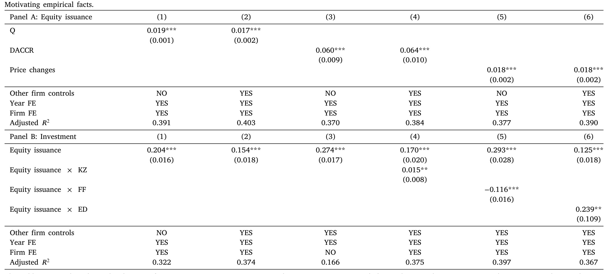
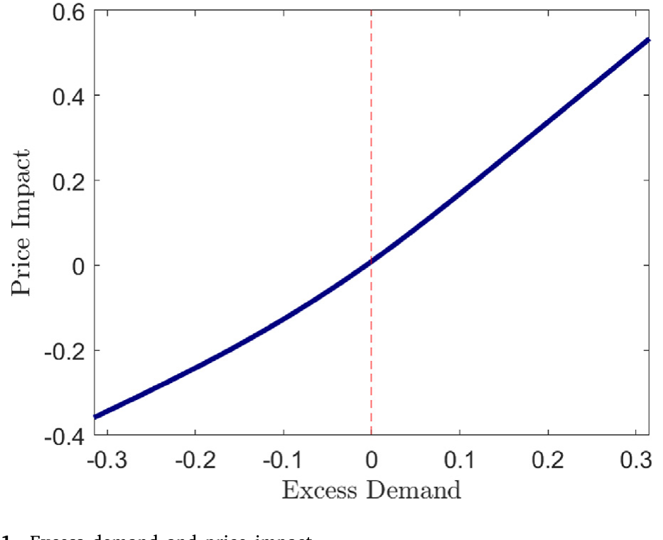
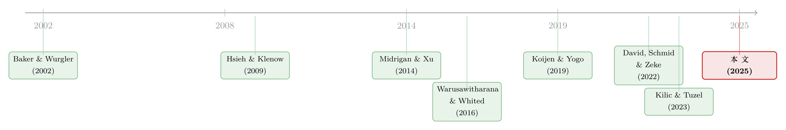

钱追着「人气」跑：投资者需求如何悄悄拧歪了资本配置
本文读的是 Choi, Tian, Wu & Kargar (2025, Journal of Financial Economics)：他们把「投资者需求」直接搬进一个动态投资模型，发现需求的涨落一面能放松融资约束、帮企业把投资做到位，一面又把资本按「人气」而非「生产率」重新洗牌。两股力相抵，后者占了上风——若抹掉这部分超额需求，企业间资本边际产出 (MPK) 的离散度会下降 26.9%，全要素生产率 (TFP) 的损失会减少 23.4%。
1 从 GameStop 说起
2021 年初，一群散户在论坛上把 GameStop 的股价抬到了天上。一家原本被认为日薄西山的线下游戏零售商，市值在几周内翻了几十倍。讥讽者很多，但有一件事容易被忽略：当股价飙到那个位置时，公司忽然可以用几乎白送的代价去发新股、把现金装进口袋——这扇融资的大门，在「人气」涌来之前是紧锁着的。
把镜头往前推三十年，1990 年代的纳斯达克泡沫里也是同样的剧本：互联网公司以任何理性定价都解释不了的价格交易，然后趁机大量增发。再往前，1987–1989 年的日本股市泡沫，Chirinko and Schaller (2001) 估计它带来了 6%–9% 的企业固定资产投资增长。
这些故事都指向同一个问题：当投资者出于非基本面的原因去追捧某些股票时，被追捧的公司拿到了本不该拿到的钱。那么，一个自然的问题是——这些钱，最后到底配到了谁手里？是配给了更有生产率、更缺钱的公司，还是恰恰相反？ 如果是后者，那么投资者需求的涨落，本身就成了资本误配 (capital misallocation) 的一个新来源。
这正是本文要回答的问题。而它的答案，比「泡沫是好是坏」这个老问题要精细得多。
2 三个事实：钱、人气、与投资
在动手建模之前，作者先用 1980–2021 年 CRSP 与 Compustat 的年度数据，摆出三个事实，把舞台搭好。
第一，股权融资不常见，但一旦发生就是「大动作」。 样本里企业某一年发行股权的概率只有 14.4%，而发债的概率高达 42.4%。可一旦发股，平均募资额是公司资产的 18.8%，75 分位高达 23.9%；相比之下，发债的均值只有 12.4%。而股票回购则更频繁（48.6% 的时间在回购）、更平滑，平均一次买回资产的 3.6%。换句话说，发股是不常用、但威力大的「核武」，回购则是日常的小火慢炖。
第二，公司更愿意在估值高的时候发股。 这是市场择机 (market timing) 文献的经典结论。作者把股权融资率对几个误定价代理变量做回归：托宾 Q (Tobin's Q)、可自由裁量应计 (discretionary accruals, DACCR)、股价涨幅，系数分别是 0.019***、0.060***、0.018***，在控制了公司特征以及公司、年份固定效应之后依然显著。
第三，也是关键的一步——发股募来的钱，真的变成了投资。 把投资率对股权融资率回归（表 2 Panel B），系数是 0.154***：股权融资每多一个百分点，投资多 15.4 个基点；作为对照，发债每多一个百分点只带来 25.7 个基点。更要紧的是，这种敏感性在不同公司之间差别巨大。作者用三个指标刻画公司的股权依赖 (equity dependence)——KZ 指数、财务灵活度指数 (FF)、以及历史「股权减债权」(ED) 指标——把它们与股权融资交乘，得到 0.015**(×KZ)、−0.116***(×FF)、0.239**(×ED)。按 ED 口径，公司从股权依赖度最低的 5 分位走到最高的 5 分位，投资—融资关系会增加 0.048，相对于基准值 0.125 上升了约 40%。

Table 2
把这三个事实串起来：投资者的「人气」（误定价）→ 公司趁机发股 → 募来的钱被投出去，而且越是依赖股权融资的公司，这条链条传导得越猛。这其实就是一条「价格反过来影响实体决策」的反馈链（关于公司是否真的会盯着股价做决策，可参见《从马嘴里掏答案：直接问 4641 家公司，它们到底有没有在「看价格做决策」》）。
但故事到这里只讲了一半，而且是好听的那一半。
3 两条相反的力：宽松效应 vs 离散效应
接着，一个不那么舒服的问题浮现出来：如果「人气」让公司更容易发股、更敢投资，那它到底是帮了资本配置，还是害了它？
本文最核心的洞见，是把投资者需求对实体投资的影响，拆成方向相反的两条力。
第一条，约束宽松效应 (constraint-easing effect)。 需求的涨落给了公司市场择机的机会：在需求强、股价高时发股，在需求弱、股价低时回购，这一买一卖之间产生的利润，等于额外给公司发了一笔钱，放松了它的融资约束，让那些原本因为缺钱而投不足的公司，能把投资做到接近「无约束」的水平。这条力是好的——它让资本流向了缺钱的地方。
第二条，离散效应 (dispersion effect)。 但同样一桩金融交易，落在不同公司身上，效果天差地别。正的超额需求鼓励公司发股，给它额外的钱去投资；负的超额需求则逼公司缩减投资、转而优先去做那笔划算的金融交易（趁低回购）。问题在于：决定一家公司此刻是「发股投资」还是「回购缩投」的，是它当下的超额需求，而不是它的生产率。于是，资本被按「人气」而非「边际产出」重新分配，在 MPK 的横截面里硬生生楔进了一道新的扭曲。
这就是全文反复要讲透的那一个核心：
投资者需求像一只看不见的手，把钱从「此刻不受待见、但可能更该投资」的公司，挪向「此刻被追捧」的公司。它放松约束（好事），同时又制造离散（坏事）。最终哪条力占上风，是个定量问题——而本文的回答是：离散效应赢了。
要把「谁赢」这件事说清楚，光靠回归不够，因为约束宽松和离散是同一笔交易的一体两面，无法在数据里直接掰开。于是真正关键的一步来了：把投资者需求搬进一个结构化的动态投资模型，让两条力在模型里同台较量，再用数据去估出它们各自的分量。
4 把「需求」搬进投资模型
本文模型的骨架，是一个标准的新古典动态投资模型：一群异质性公司，面对真实摩擦（资本调整成本、固定经营成本、税收）与金融摩擦（抵押约束）做投资和融资决策。它的新意，在于把资本的供给side——也就是投资者需求——内生地接了进来。
需求side。 这一块建立在 Koijen and Yogo (2019) 的需求体系 (demand system) 之上：每个机构投资者对一只股票的组合权重，是该公司可观测特征（市值、账面市值比、盈利、投资等）的函数，再加上一个超出基本面的潜在需求 (latent demand) 成分。把所有投资者的需求加总、令市场出清，就得到了股价。于是，一只股票若被赋予更高的潜在需求，它的价格就被抬高——而当公司想增发或回购时，它面对的不再是一个「价格不动」的市场，而是一条向下倾斜的需求曲线。（关于「为什么投资者的需求曲线会这么陡、价格对供给这么敏感」，可参见《为什么「理性投资者」也会拒绝换股？——把需求弹性拆成两半》 与《弱替代：因子动物园是从哪里冒出来的？》。）
正是这条向下倾斜的需求曲线，把「超额需求」翻译成了「价格冲击」，给公司开出了一扇择机的窗口。

Figure 1: Excess demand and price impact
供给side（公司）。 公司持有净现金 \(C_t\)（取负值时表示净负债），它受一条抵押约束的约束：
$$-C_t \le \theta K_t$$
这里 \(\theta\) 是可抵押率 (pledgeability)，即公司能拿去向债主抵押的有形资产比例。\(K_t\) 是资本存量。这条约束很直白：你能借多少钱，取决于你有多少能抵押的「家当」。
公司可以靠内部现金或新发债来给投资融资；除此之外，它还能动用股权市场——发新股把现金装进来，或者派现金（分红、回购）出去。现金存量的演化，是全文机制的心脏：
看懂这一个方程，就看懂了全文。\(E_t\) 是「需求强时发股进钱」，\(D_t\) 里的回购是「需求弱时低价买回」，而 \(\Psi(E_t)\) 这个发行成本/楔子把投资者需求的价格冲击接了进来。约束宽松效应与离散效应，全都从这一条现金账里长出来：择机交易带来的现金，要么补上了投资缺口（宽松），要么被拿去做了与生产率无关的金融操作（离散）。
公司每期最大化股东价值，权衡的就是：这笔被「人气」推着走的现金，是去买机器，还是去买自家便宜的股票。
5 怎么估：间接推断
然后是技术上最棘手的一步。需求side的参数不能用普通办法估——因为公司的决策（发股、回购、改变特征）会反过来进入投资者的需求函数，存在内生的反馈环。Koijen and Yogo (2019) 在纯资产定价的场景里用工具变量 (IV) 处理它，但在一个公司决策内生的动态模型里，那套 IV 不再适用。
作者的解法是间接推断 (indirect inference, Gourieroux et al. 1993)：先在数据上跑一个辅助模型，去近似「公司特征 ↔ 潜在超额需求」之间那层内生关系，得到一组辅助系数；再调结构参数，让模型模拟出来的数据能复现这组辅助系数。公司动态那一块，则用模拟矩估计 (simulated method of moments, SMM)，把模型矩匹配到真实矩上。
这套估计的可信度，靠两件事撑着。其一，估出来的需求弹性和投资者间、时间上的需求变异都落在合理范围。其二、也更有说服力的是外部验证：模型能复现一些没有被拿去做估计目标的数据特征，比如公司在增发新股 (SEO) 期间的高估值。一个没被「喂」过这个事实的模型，却能自己吐出来，这是结构估计里难得的信号。
6 结果：26.9% 与 23.4%
现在两条力可以同台较量了。作者构造一个反事实经济：关掉投资者的超额需求，其余不变，再看资本配置变好还是变坏。
衡量误配的尺子是 Hsieh and Klenow (2009) 那两把经典的：MPK 在公司横截面上的方差（离散度越大，配置越偏离最优），以及由此推出的 TFP 损失。结果是：抹掉超额需求后，MPK 离散度下降 26.9%，TFP 损失减少 23.4%。
也就是说——离散效应赢了。投资者需求的涨落，净效果是把资本配得更乱、把整体生产率拖得更低。「人气」开出的那扇融资窗口，看似雨露均沾，实则把钱按人气而非生产率重排了座次。
这个量级有多大？作者拿它和文献里已确立的几个误配来源比：投资者需求带来的扭曲，比债务市场摩擦、比资本调整成本都更可观，量级上可与 David et al. (2022) 强调的「风险驱动的误配」相提并论——而后者一向被认为是美国上市公司误配的主因之一。
资金流向也佐证了机制。作者追踪公司的「资金来源与运用」，发现公司不论是否受融资约束，都会把相当一部分资源拿去给投资者需求「择机」。但这种择机的代价并不对称：它主要挤出了受约束公司的投资，而不受约束的公司则多半把金融交易的所得派现给了老股东。换句话说，最需要钱去投资的公司，反而最容易被这场择机游戏抽走资源。
7 这真的是「情绪」吗？
讲到这里，一个挑剔的读者一定会追问：你说的「潜在超额需求」，凭什么是情绪，而不是公司基本面里你没观测到的那一块？这关乎整篇文章的诠释。
于是反转——或者说，落锤——出现在最后一节。作者把模型隐含的潜在需求拎出来，去和外部指标比对，发现它：(i) 与非基本面的资产定价因子的相关性，明显强于与基本面因子的相关性；(ii) 与文献里常用的几个情绪指标正相关，包括基于新闻发布、订单失衡、以及财报电话会语气 (tone of earnings conference calls) 构造的那些。这就支持了「需求由情绪驱动」的解读，与 Koijen and Yogo (2019) 把潜在需求归因于投资者情绪的立场一致。
更进一步，分样本估计显示：家庭持股比例更高、情绪波动更大的公司，其潜在需求的涨落也更剧烈，资本配置因此被扭曲得更厉害。这把「情绪」与「实体后果」之间的链条钉得更实——散户与情绪聚集之处，正是误配最严重之处。
8 文献脉络
把本文放回它的谱系里，能看得更清楚。
最早的源头有两条。一条是误配文献：Hsieh and Klenow (2009) 用中印数据揭示了企业间资源误配会吞掉多少 TFP，从此「用 MPK 离散度量误配」成了标准做法；此后人们逐一去量各种摩擦的贡献——债务约束 (Midrigan and Xu, 2014)、风险敞口 (David et al., 2022)、乃至「错配本身可能是种下注」（这一反直觉的角度，见《投资于「错配」：那些看起来在乱花钱的公司，其实在赌一次跳跃》，正是本文引用的 Kilic and Tuzel, 2023）。另一条是误定价与公司政策：Baker and Wurgler (2002) 的市场择机、Baker et al. (2003) 的股权依赖公司投资、以及 Warusawitharana and Whited (2016) 用结构模型去量误定价对融资与投资的拉动。

第三条线是近些年最热的需求体系资产定价：Koijen and Yogo (2019) 用投资者持仓把价格「需求侧」地拆开，Gabaix and Koijen (2021) 提出非弹性市场假说。但这一脉几乎都停在资产定价一侧，把公司的融资与投资当成外生。
本文的位置，恰好是这三条线的交汇点：它把 Koijen–Yogo 的需求体系，嫁接进一个有血有肉的动态公司金融模型，第一次让「投资者需求」成为资本误配的一个可量化来源。这是它真正的贡献所在。
9 评论与延伸（Q&A + 研究方向）
(a) 几个可能的疑问
Q：这和传统的「市场择机」文献到底有什么不同？
择机文献告诉你「公司会在估值高时发股」，但它把这当成单个公司的融资选择，不追问总量后果。本文的增量在于：把择机放进一般均衡式的需求–供给框架里，算出无数公司各自择机之后，整个经济的资本配置被扭曲了多少。从「公司行为」上升到了「配置效率」。
Q：凭什么说离散效应一定压过宽松效应？这难道不该看具体参数吗？
正是如此——谁赢是个纯定量问题，没有先验答案。这也是为什么必须上结构模型：两条力是同一笔交易的一体两面，回归里掰不开。模型估完、做反事实，才得出「关掉超额需求 → 误配下降
26.9%」，即离散效应净占上风。换一组参数，结论原则上可以反过来。
Q：26.9% 这个数字的识别从哪来？会不会是被模型设定「假定」出来的？
关键靠间接推断：辅助模型在真实数据上刻画了「公司特征 ↔ 潜在需求」的内生关系，结构参数被要求去复现它。更让人放心的是外部验证——模型能吐出 SEO 期间的高估值这种没被当作估计目标的特征。当然，这仍是结构估计，量级对函数形式（调整成本、需求弹性）有依赖，应当读作「在该框架下的合理估计」，而非无模型的因果数。
Q：既然强需求能帮缺钱的公司融资投资，那 meme 股潮岂不是好事？
局部看确实是：本文反事实里，遭遇「meme」式需求骤增的公司股权融资增加十倍以上，投资随之上升；2021 年那六只 meme 股（GameStop、AMC 等）平均增发多了
73%、投资多了43%。但这是离散的源头而非解药——钱涌向的是被追捧的公司，不是更该投资的公司。对个别公司是甘霖，对整个经济是把资本配歪。
Q：凭什么说潜在需求是「情绪」而不是漏掉的基本面？
三条证据：模型隐含的潜在需求与非基本面定价因子相关性更强；与新闻、订单失衡、财报电话语气等情绪指标正相关；且在家庭持股高、情绪波动大的公司里更剧烈。这些都指向情绪解读，而非「被忽略的基本面」。
Q：这跟 David et al. (2022) 的「风险驱动误配」是什么关系？
两者是并列的误配来源，而非替代。本文特意把投资者需求的贡献和债务摩擦、调整成本、风险敞口放在一起比，结论是：需求带来的扭曲比前两者更大，与风险考量相当。它给「美国公司的 MPK 离散从何而来」这道账，添了一个此前被忽略的新科目。
(b) 几个可能的研究问题与提案
1. 把需求体系搬到公司债市场。
【经济故事】本文讲的是股权需求如何扭曲投资。但企业更日常的外部融资是债。如果债券投资者（保险、共同基金、外资）的需求也有「情绪」成分，那么需求强时企业低成本发债、需求弱时缩减——同样的离散效应会不会出现在信用市场？而债的久期、契约、评级门槛会让机制大不相同。
【可行性】中。需要把 Koijen–Yogo 式需求体系重估到债券持仓上（eMAXX／Lipper 债券持仓 + Mergent FISD），识别难点在于债券需求弹性的估计。是 doable 的，但工作量不小。
2. 外资持有人作为外生需求冲击。 【经济故事】指数纳入（如某债券被纳入彭博巴克莱全球综合指数、或某股被纳入 MSCI）会带来一波几乎与公司基本面无关的外资被动需求。这正好是本文「超额需求」的一个可观测、近外生的版本——可以直接检验：被动外资需求的注入，是放松了企业融资约束（宽松），还是把资本按指数权重而非生产率重排（离散）？ 【可行性】高。指数纳入事件 + 持仓数据 + Compustat 投资，断点/事件研究识别清晰，是把本文结构结论拿去做简约式 (reduced-form) 验证的好场子。
3. 需求冲击的「流动性」维度。 【经济故事】本文里需求只通过价格影响企业。但现实中，需求弱往往同时意味着流动性差——企业即便想发股也发不动、或发行折价巨大。把流动性这一层加进来，离散效应可能被放大：流动性最差的时候，恰恰是最该投资的受约束公司最融不到资的时候。 【可行性】中。需在模型里给发行成本 \(\Psi(E_t)\) 加一个随市场流动性变化的状态变量，并用发行折价、承销价差等数据去识别。理论可行，估计偏重。
4. 谁在为这场误配买单：横截面的福利分布。 【经济故事】本文给出了总量的 TFP 损失，但没说损失如何分摊。受约束的、家庭持股高的公司被挤出投资最狠——那么这场需求驱动的误配，是否系统性地伤害了某一类公司（小盘、年轻、缺乏机构覆盖）的长期成长？ 【可行性】高。基于本文已有的分样本框架延伸即可，数据现成，主要是把「总量数字」拆到横截面分布上。
参考文献
- Baker, Malcolm, Stein, Jeremy C., Wurgler, Jeffrey, 2003. When does the market matter? Stock prices and the investment of equity-dependent firms. Quarterly Journal of Economics 118(3), 969–1005.
- Baker, Malcolm, Wurgler, Jeffrey, 2002. Market timing and capital structure. Journal of Finance 57(1), 1–32.
- Chirinko, Robert S., Schaller, Huntley, 2001. Business fixed investment and "bubbles": The Japanese case. American Economic Review 91(3), 663–680.
- David, Joel M., Schmid, Lukas, Zeke, David, 2022. Risk-adjusted capital allocation and misallocation. Journal of Financial Economics 145(3), 684–705.
- Dessaint, Olivier, Foucault, Thierry, Frésard, Laurent, Matray, Adrien, 2019. Noisy stock prices and corporate investment. Review of Financial Studies 32(7), 2625–2672.
- Gabaix, Xavier, Koijen, Ralph S.J., 2021. In search of the origins of financial fluctuations: The inelastic markets hypothesis. NBER Working Paper 28967.
- Gourieroux, Christian, Monfort, Alain, Renault, Eric, 1993. Indirect inference. Journal of Applied Econometrics 8(S1), S85–S118.
- Hsieh, Chang-Tai, Klenow, Peter J., 2009. Misallocation and manufacturing TFP in China and India. Quarterly Journal of Economics 124(4), 1403–1448.
- Kilic, Mete, Tuzel, Selale, 2023. Investing in misallocation. Working Paper, University of Southern California.
- Koijen, Ralph S.J., Yogo, Motohiro, 2019. A demand system approach to asset pricing. Journal of Political Economy 127(4), 1475–1515.
- Midrigan, Virgiliu, Xu, Daniel Yi, 2014. Finance and misallocation: Evidence from plant-level data. American Economic Review 104(2), 422–458.
- Moll, Benjamin, 2014. Productivity losses from financial frictions: Can self-financing undo capital misallocation? American Economic Review 104(10), 3186–3221.
- Warusawitharana, Missaka, Whited, Toni M., 2016. Equity market misvaluation, financing, and investment. Review of Financial Studies 29(3), 603–654.